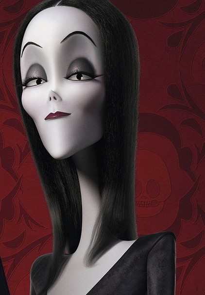
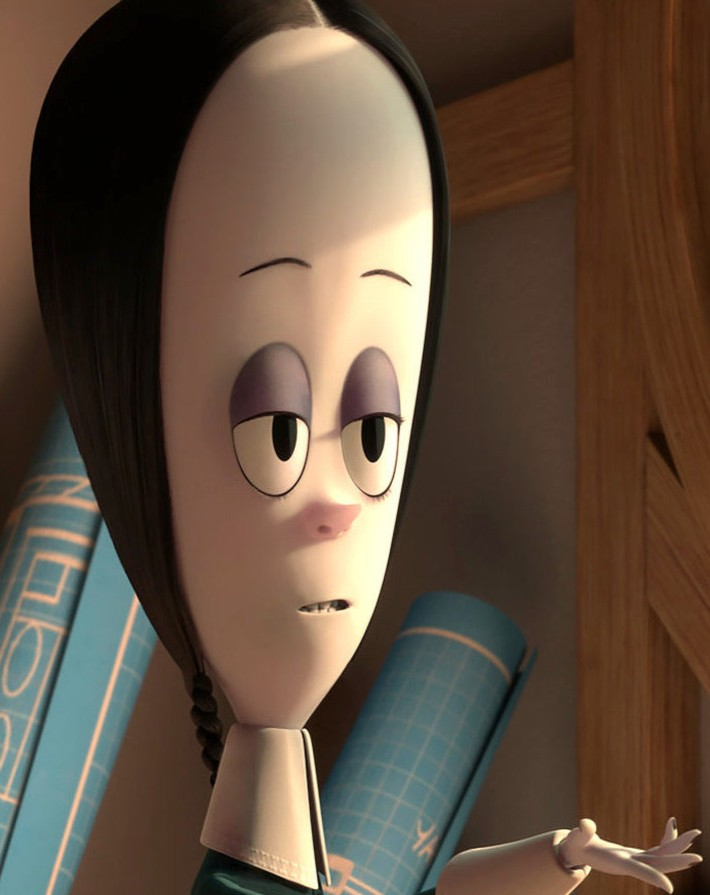
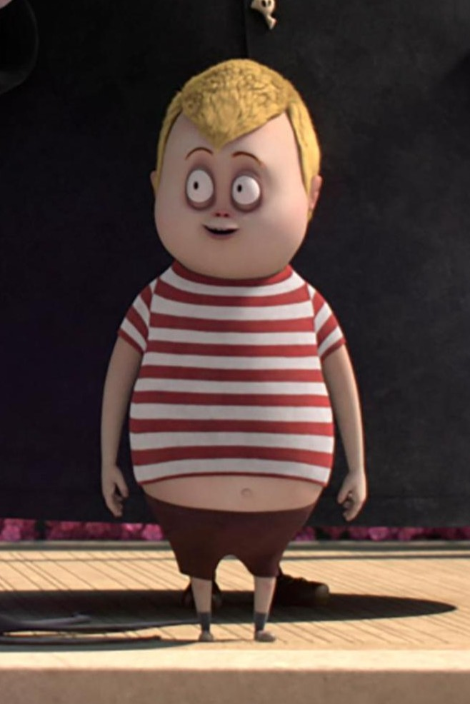

Gomez Florencia Addams is the patriarch of The Addams Family. As with all of the members of the family, in the original cartoons he had no name. When the 1964 television series The Addams Family was being developed, Charles Addams suggested naming the character either Repelli or Gomez. Addams left the final choice up to actor John Astin, who chose Gomez.

Morticia Addams
Morticia A. Addams (née Frump) is the fictional matriarch of The Addams Family. Morticia was a rebellious child. When she was 10 years old, she wanted to go to work, run out and play in the snow when she had pneumonia, and run away from home, but her mother, Granny Frump, never stopped her. Later on, on her 12th birthday, her grandfather, Grandpa Droop, gave her stock certificates.

Wednesday Addams
Wednesday Friday Addams is a fictional character created by American cartoonist Charles Addams in his comic strip The Addams Family. Wednesday and other members of the family had no names. When the characters were adapted to the 1964 television series, Addams gave her the name "Wednesday", based on the well-known nursery rhyme line, "Wednesday's child is full of woe."

Pugsley Addams
Pugsley Uno Addams is a member of The Addams Family created by cartoonist Charles Addams. Pugsley was first portrayed as the oldest child of Morticia and Gomez Addams, but later was shown to be younger than Wednesday.